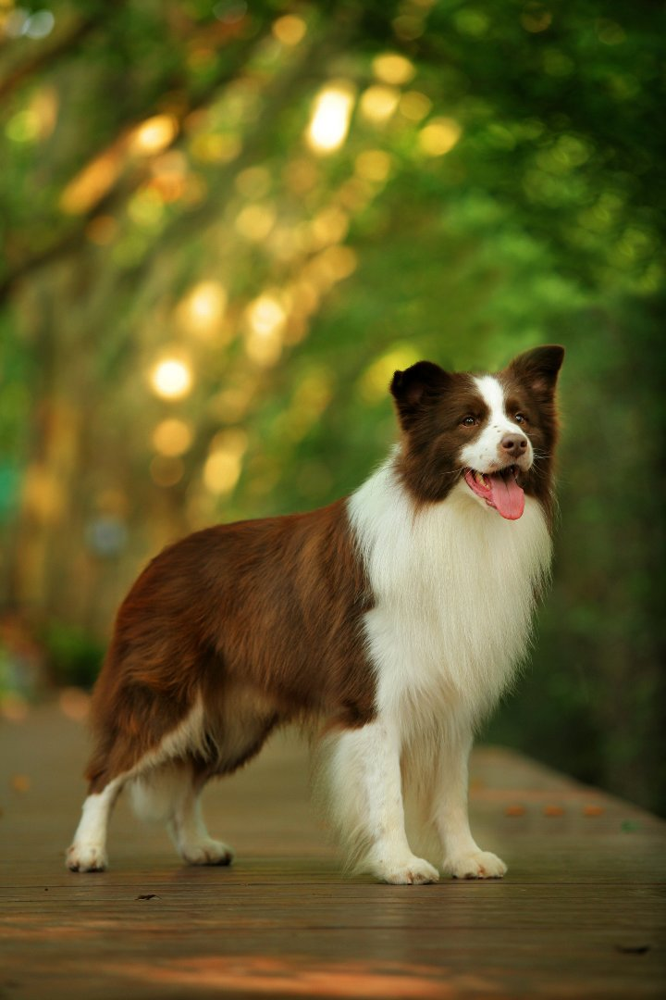
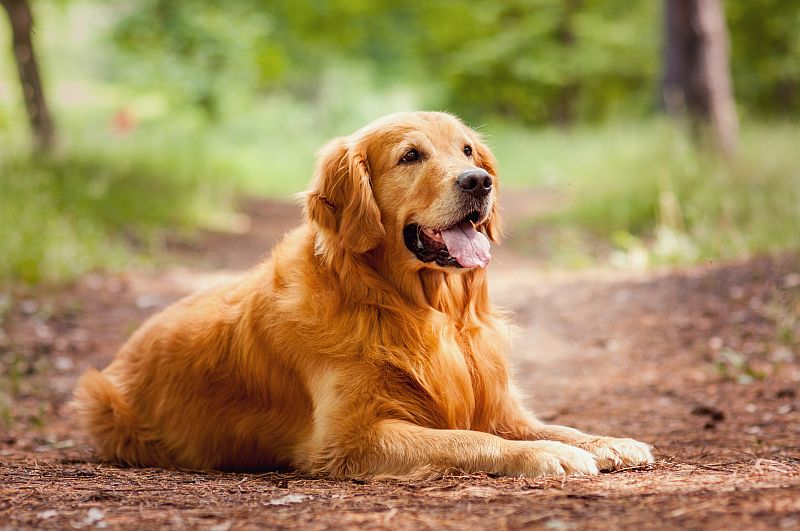

Malamutas

Malamutas - tai galingas šuo, kilęs iš Aljaskos. Jis yra didelis, stiprus ir ištvermingas šunys, daugiausia naudotas traukiant vežimus sunkiuose žieminiuose sąlygose. Malamutai turi įspūdingą išvaizdą su stambiais kūnais ir tvirtu kailiu. Jie yra draugiški, paklusnūs, bet reikalauja nuoseklaus mokymo ir fizinio aktyvumo. Malamutai puikiai tinka šeimoms su pakankamai laiko ir energijos.
Borderkolis

Borderkolis - energingas, protingas šuo iš Škotijos. Vidutinio dydžio, su stambiais ausimis. Geras piemuo ir ganytojas, reikalauja fizinio ir protinio aktyvumo. Ištikimas šeimos draugas, bet reikalauja nuolatinės veiklos.
Auksaspalvis Retriveris

Auksaspalvis retriveris yra draugiškas, meilus šuo, kilęs iš Didžiosios Britanijos. Jie yra vidutinio dydžio su blizgančiu, auksiniu kailiu. Ši veislė pasižymi ne tik gražia išvaizda, bet ir draugišku būdu, todėl dažnai naudojama kaip šeimos šuo arba terapijos šuo. Auksaspalviai retriveriai yra išskirtinai protingi ir lengvai mokomi, todėl puikiai tinka įvairioms užduotims, įskaitant paiešką, traukimą ir paklusnumo treniruotes. Jie taip pat turi stiprų norą maloniai bendrauti su žmonėmis ir kitais gyvūnais, padarant juos populiariais augintiniais šeimose. Ši veislė dažnai išsiskiria savo energija, todėl jiems reikia pakankamai fizinio aktyvumo, kad būtų laimingi ir sveiki.